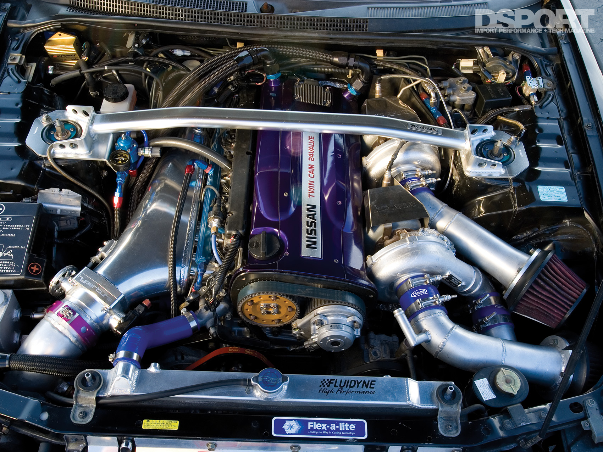
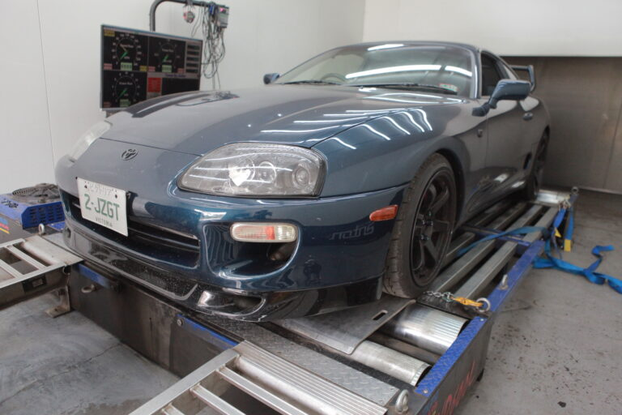
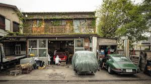
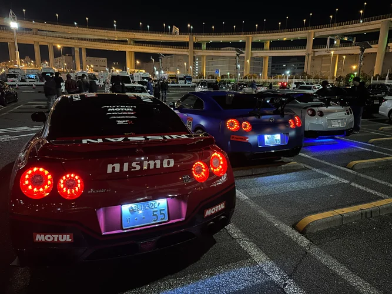
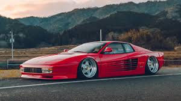
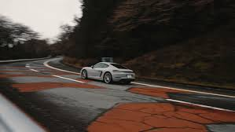

The Touge Experience: What to Expect
Entering a Japanese mountain pass at night is a sensory overhaul. Expect the "G-Force Dance": a rhythmic transition of weight as you navigate tight hairpins and off-camber sweeps that demand total concentration. Unlike a flat track, the touge offers changing elevations, unpredictable surfaces, and the sheer verticality of the Japanese Alps.
Drivers should prepare for the unique "Cat-and-Mouse" etiquette, where the lead car sets the pace and the chaser attempts to stay within a single car length. It is an environment where horsepower takes a backseat to braking finesse and steering input. The reward isn't a trophy, but the mechanical symphony of an engine echoing off canyon walls and the shared respect found at the summit vending machines.

Monozukuri: The Spirit of Engineering
Japanese car culture is built upon Monozukuri—the relentless pursuit of technical perfection and craftsmanship. It is a philosophy where the build is never truly finished, and every component, from the meticulously balanced internal rotating assembly of an RB26 to the hand-finished bodywork of a custom build, is treated with reverence. This connection between the driver and the mechanical soul of the machine is what separates a mere vehicle from a true JDM icon.

The '276hp' Illusion
The 1990s are revered as the "Golden Era" due to a unique regulatory hurdle known as the Gentleman's Agreement. While manufacturers officially capped horsepower at 276hp to promote safety, they simultaneously over-engineered engines like the 2JZ-GTE and the SR20DET. This hidden potential allowed tuners to extract massive power while maintaining legendary reliability, creating a global phenomenon that still dominates the tuning world today.

The Pillars of Tuning
The identity of Japanese car culture was forged in the workshops of legendary tuning houses. Names like HKS, GReddy, and Spoon Sports aren't just brands; they are the architects of performance. By focusing on specific platforms—like Spoon's dedication to high-revving Honda VTEC engines—these houses developed a specialized "tuner" identity that prioritizes functional aesthetics and track-proven performance over superficial modifications.

Rituals of the Parking Area
The heart of the community isn't found on the track, but at Daikoku Parking Area. Unlike the aggressive nature of western street meets, Japanese gatherings are defined by a quiet, respectful social etiquette. Here, extreme diversity is the norm; a million-dollar exotic might be parked next to a "rat-style" drift missile, with both owners sharing a mutual respect for the passion poured into their respective builds.

Tribes of Self-Expression
From the ground-scraping camber of the Shakotan movement to the wildly imaginative silhouettes of Bosozoku vans, Japan treats car styling as a canvas for cultural identity. These "tribes" push the boundaries of automotive design, often prioritizing a specific visual statement—such as the massive exhaust pipes of the 'Takeyari' style—over traditional performance metrics. It is a culture that celebrates the bold and the creative.

Mountain Pass Progress
